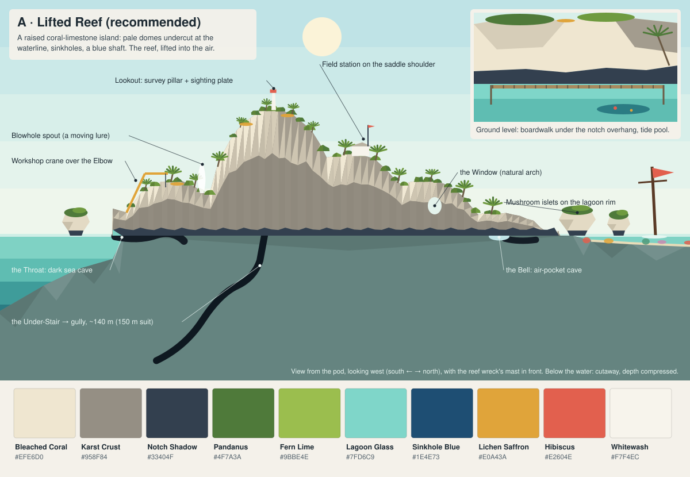
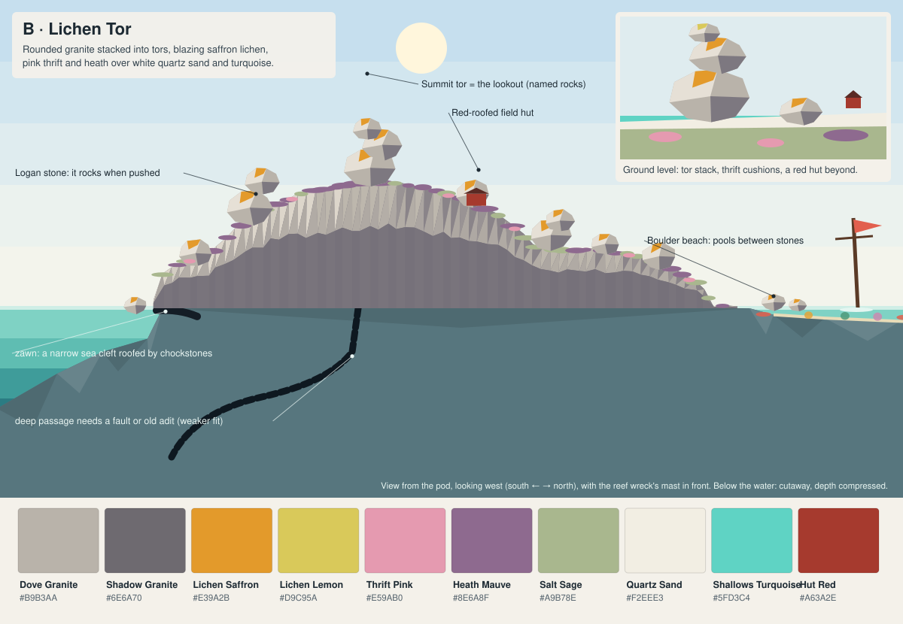
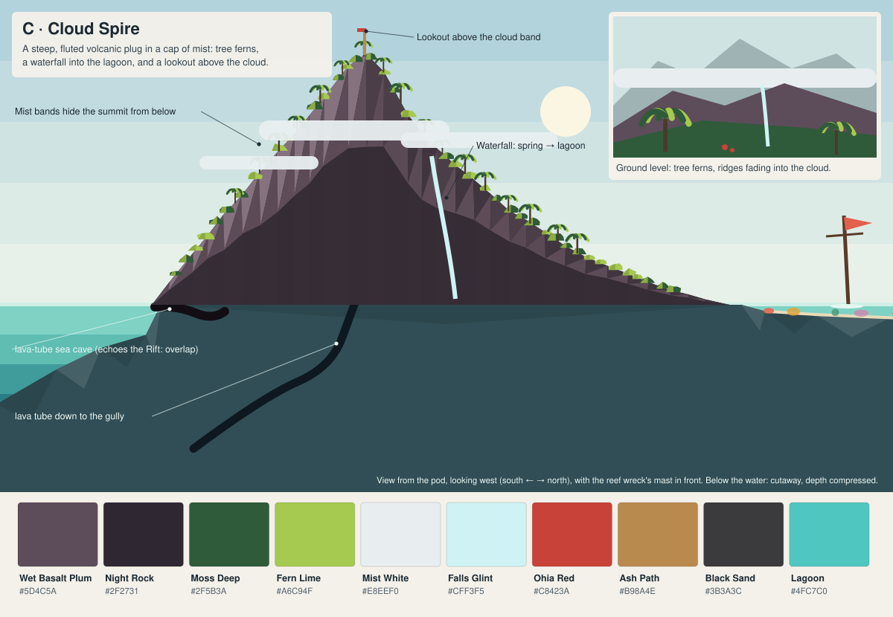
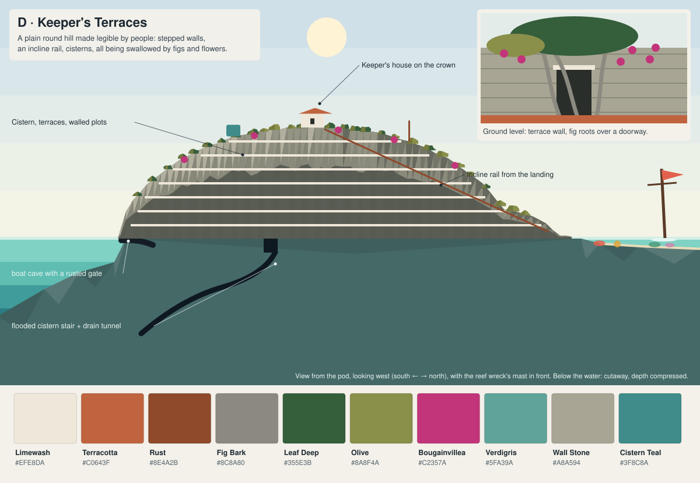
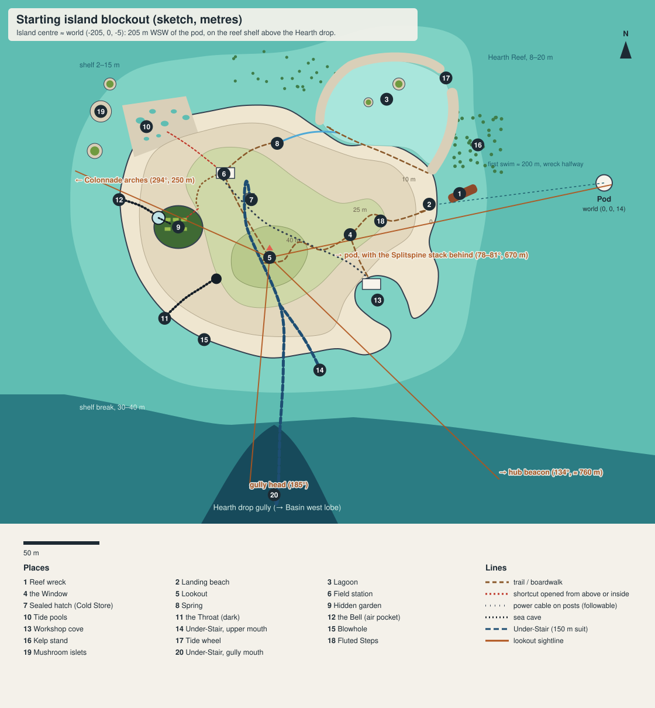

Starting island: four art directions and a blockout
Concept sketches for docs/research/STARTING-ISLAND-DESIGN.md. Each card shows the island as seen from the pod (about 200 m away), a ground-level vignette and a named palette. The water colours are the reef's own, so you can judge the contrast. Regenerate them with node docs/research/starting-island/mocks.mjs.

Recommended. Pale undercut domes over a dark notch band; sinkholes, sea caves and a blue shaft all come from one geology.

The strongest colour pop (saffron on grey against turquoise) and the cheapest shapes. Weaker for caves, springs and the deep passage.

The most dramatic summit moment. Overlaps the Rift and Isles basalt, and dense foliage costs performance and sightlines.

The richest storytelling, but it turns the island into a facility and takes the Isles' "human work" identity.

Blockout for the recommended option: zones, places, loops, caves, the deep passage and the lookout's sightlines.